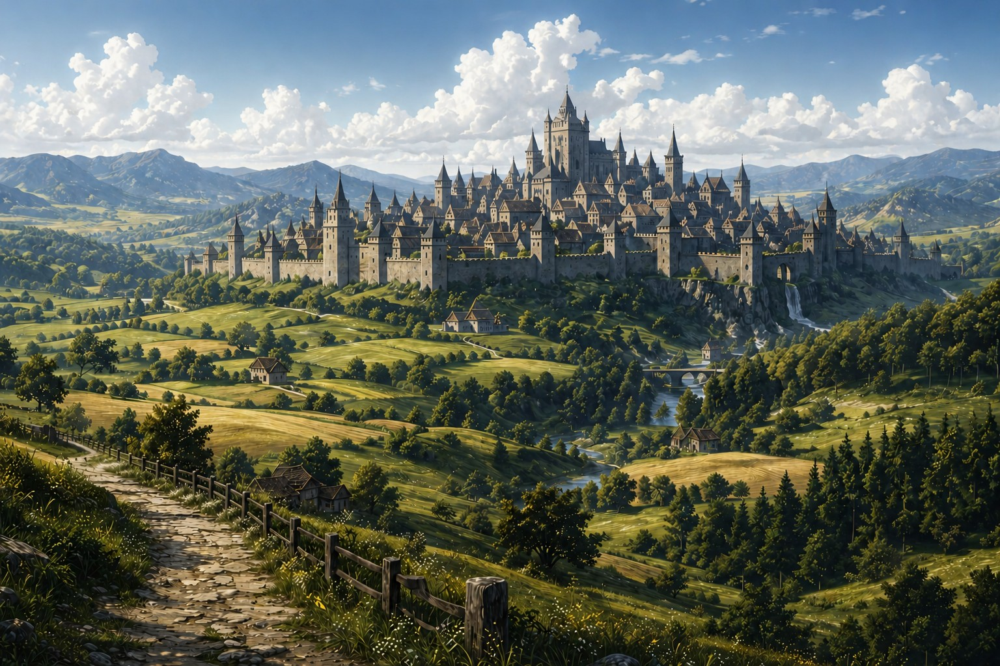

Six civilisations jouables
Les
Royaumes
Choisir une allégeance, c’est choisir une culture, des devoirs et une histoire à poursuivre.Comparer les royaumes ↓Six héritages à rebâtir.
Chaque peuple est arrivé avec ses traditions, ses conflits et sa vision du monde. Les six archives sont désormais ouvertes : institutions, sociétés, guerres, alliances, chute et réveil dans le Nouveau Monde y forment une mémoire commune.

Asharun
Un royaume façonné par le désert, les routes marchandes et l'Esprit des Dunes.
- Sagesse
- Hospitalité
- Persévérance

Falkheim
Des communautés nordiques bâties pour résister, explorer et célébrer autour du feu.
- Force
- Gloire
- Résilience

Shintai
Un royaume de rizières, de savoir-faire précis et de traditions martiales.
- Respect
- Harmonie
- Bravoure

Vanloria
L'ordre, la défense et l'artisanat soutiennent les bastions du royaume.
- Honneur
- Loyauté
- Protection

Nerethis
Après la Dernière Nuit et la perte de leur terre, les survivants cherchent un nouveau rivage.
- Liberté
- Fraternité
- Ruse

Erythros
Des cités antiques où philosophie, agriculture et commerce se rencontrent.
- Savoir
- Discipline
- Citoyenneté
Des serments d’Aureval aux dernières lueurs de Konungard.
Parcourez les mémoires de Vanloria, Asharun, Erythros, Nerethis, Shintai et Falkheim, puis choisissez l’héritage que votre personnage portera dans le Nouveau Monde.